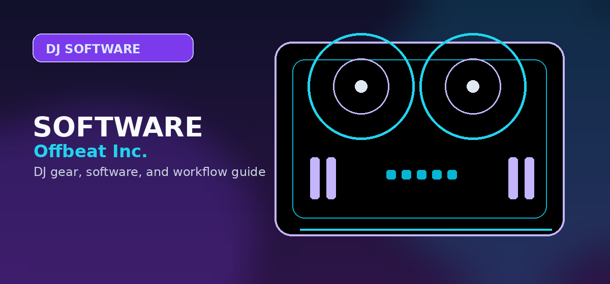

Every DJ Software Compared — Pick the Right One for Your Setup
Every major DJ software compared: Serato DJ Pro, rekordbox, Traktor Pro, djay Pro, Virtual DJ. Features, pricing, and hardware compatibility by Offbeat Editorial Team.

Disclosure: This page uses affiliate links. We may earn a commission at no extra cost to you. Full disclosure →
How to Pick DJ Software in 2026
The right software depends on three things: (1) what hardware you already own or plan to buy, (2) whether you want free vs paid, and (3) whether you'll gig at clubs that use Pioneer CDJs (rekordbox) vs carry your own controller (Serato/Traktor).
DJ Software Comparison Table
| Software | Free Version | Pro Price | Best For | Streaming | Stems |
|---|---|---|---|---|---|
| Serato DJ Pro | ✓ Lite | $19.99/mo or $299 | Live performance, scratch | ✓ Tidal, SoundCloud | ✓ Serato Stems |
| rekordbox | ✓ Free (lighting only) | $17.99/mo | Club DJs, Pioneer gear | ✓ Beatport, Beatsource | ✓ Cloud Stems |
| Traktor Pro 4 | ✓ Limited | $99 one-time | Four-deck mixing, remixing | ✓ Beatport | ✓ Stems (NI format) |
| djay Pro AI | ✗ | $49.99/yr (iOS) or $9.99/mo | iPad/mobile DJing | ✓ Spotify, Tidal, Apple Music | ✓ Neural Mix |
| Virtual DJ | ✓ Home (non-commercial) | $299/yr Pro or $19/mo | Karaoke, mobile DJs | ✓ Deezer, Tidal, SoundCloud | ✓ VideoFX stems |
| Mixxx | ✓ Fully free, open-source | Free forever | Budget DJs, Linux users | ✗ | ✗ |
Software Deep-Dives
Serato DJ Pro — Best for Live Performance
Industry standard for scratch DJs and live performers. Runs on 90% of DJ controllers. Serato Stems isolates audio in real time.
- Serato DJ Pro Full Review
- Serato vs rekordbox vs Traktor
- Virtual DJ vs Serato
- Serato DJ Lite vs Pro
- rekordbox vs Serato
rekordbox — Best for Club DJs
If you gig at venues with Pioneer CDJs, you need rekordbox to prepare your tracks, key/BPM analysis, and cue points.
Read Full Review →Traktor Pro 4 — Best for Remixing
4-deck mixing, Remix Decks, and Stems playback. One-time $99 purchase — best value for dedicated home producers who perform live.
Read Full Review →djay Pro AI — Best for iPad/Mobile
Neural Mix AI isolation, Spotify/Apple Music streaming integration, and optimized for touch. Best iPad DJ app by a wide margin.
Read Full Review →Best Free DJ Software
Mixxx, GarageBand's DJ features, and free tiers from Serato/rekordbox/djay — what's actually usable without paying?
Free Options →Vinyl Scratch DVS Software
Want to scratch real vinyl but use digital files? Serato DVS, Traktor Scratch, and rekordbox DVS compared.
DVS Guide →DJ Software vs DAW — What's the Difference?
DJ software (Serato, rekordbox) is for live mixing and performance — beatmatching, EQing, effects on the fly. DAWs (FL Studio, Ableton Live, Logic Pro) are for producing and recording music. Many DJs use both: a DAW to make tracks, DJ software to perform them.
Best DAWs for Music Production
FL Studio, Ableton Live, Logic Pro, GarageBand — for DJs who also produce.
DAW Comparison →Music Production Software Hub
Free options, plugins, sample packs — the full music production toolkit for DJ-producers.
Production Hub →Choosing DJ Software: A Beginner's Framework
Choosing the right DJ software can feel overwhelming with 5+ major platforms available. Here's a practical framework: If you already own (or plan to buy) a Pioneer controller, go rekordbox — it's designed to flow seamlessly with Pioneer hardware and is the industry standard at clubs. If you're starting with a budget controller from Numark, Hercules, or another brand, Serato or Virtual DJ will work well — both have excellent community support and tutorials. If you want maximum features and customization without the learning curve, Virtual DJ is unbeatable. If you love sound design and advanced effects, Traktor rewards time invested in learning its ecosystem. The "best" software is the one that matches your hardware and workflow, not the one with the most features.
Common DJ Software Mistakes to Avoid
Beginners often make preventable mistakes when choosing DJ software. First mistake: buying expensive software before trying free tiers. Serato DJ Lite (free), rekordbox (free with hardware), and Virtual DJ (free with watermark) let you learn for free. Second mistake: switching platforms after a few months. Sticking with one platform for 6+ months lets you develop real proficiency. Third mistake: assuming a software works with any controller. Always verify compatibility before buying. Fourth mistake: ignoring tutorials because you expect the software to be intuitive. Every DJ software has quirks — investing 2-3 hours in learning the interface pays massive dividends.
The Learning Path: From Free Tier to Pro
Most DJs start with free tiers or limited versions, then upgrade as skills improve. This progression makes sense: you won't know if you love DJing until you've tried it, so pay nothing while learning. After 1-3 months, if you're practicing regularly, invest in the full version of software that matches your workflow. After 6+ months, consider upgrading controllers or adding specialized tools like Stems (audio isolation) or DVS (vinyl scratching). This staged approach prevents spending $500 on gear you might not use. Don't commit to professional-grade software until you've proven you'll practice regularly.
Find DJ Software & Bundles
Browse DJ software bundles, hardware controller packages, and upgrade your setup on Amazon — Prime shipping, easy returns.
Also on zZounds
Compare prices with financing options on DJ controllers and hardware bundles.
Bottom line: Serato and rekordbox suit most DJs; Virtual DJ wins on features; Traktor rewards those who invest time learning it properly.
How to use this software hub
Start with the broad software guide, narrow by controller compatibility, then check streaming and recording limitations. Software is the operating system of a DJ setup; changing it later usually means rebuilding library habits, cues, playlists, and controller muscle memory.
Frequently Asked Questions
What should I check before choosing DJ software?
Check controller compatibility, library tools, streaming support, stem features, recording limits, subscription cost, and whether the software matches the venues or hardware you expect to use.
Can I start with free DJ software?
Yes, but free versions often restrict hardware, recording, effects, or advanced library features. Use free software to learn basics, then upgrade when the limitations slow you down.
Does DJ software choice affect controller choice?
Yes. Many controllers are built around rekordbox, Serato, Traktor, VirtualDJ, or djay. Choose the software path before buying hardware whenever possible.